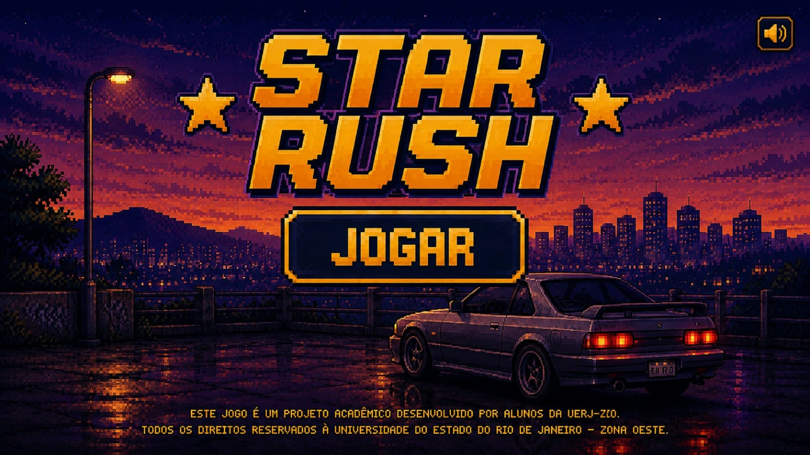

Star Rush
Criador: Kauã Soares
STAR RUSH é um jogo de corrida arcade em estilo 16-bits, inspirado nos clássicos jogos retrô.
Baixar JogoGUIA
Seu objetivo é simples: alcance 20 pontos para vencer, mas cuidado, encostar nas bordas da pista significa fim de jogo. Desvie, mantenha o controle e pegue as 20 estrelas!